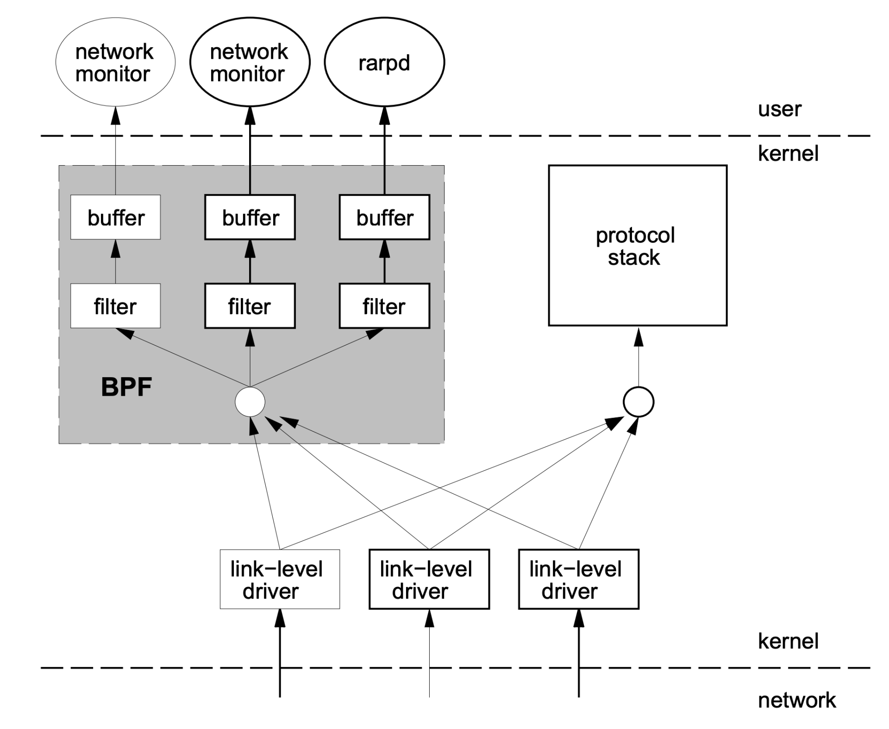
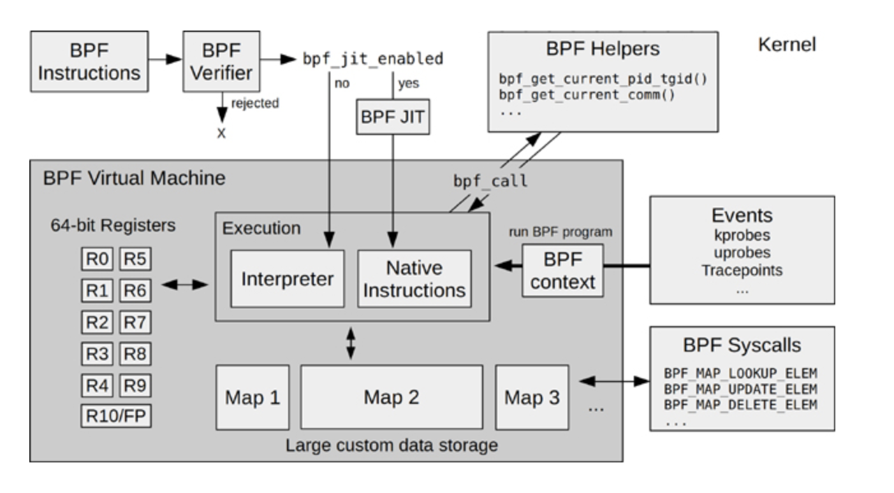
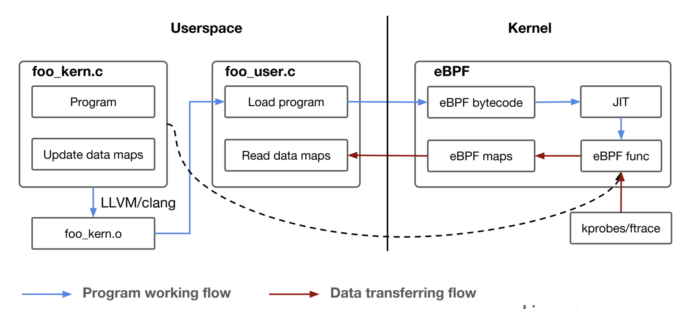

- 00 开篇词 一个态度两个步骤，成为容器实战高手.md.html
- 01 认识容器：容器的基本操作和实现原理.md.html
- 02 理解进程（1）：为什么我在容器中不能kill 1号进程？.md.html
- 03 理解进程（2）：为什么我的容器里有这么多僵尸进程？.md.html
- 04 理解进程（3）：为什么我在容器中的进程被强制杀死了？.md.html
- 05 容器CPU（1）：怎么限制容器的CPU使用？.md.html
- 06 容器CPU（2）：如何正确地拿到容器CPU的开销？.md.html
- 07 Load Average：加了CPU Cgroup限制，为什么我的容器还是很慢？.md.html
- 08 容器内存：我的容器为什么被杀了？.md.html
- 09 Page Cache：为什么我的容器内存使用量总是在临界点.md.html
- 10 Swap：容器可以使用Swap空间吗？.md.html
- 11 容器文件系统：我在容器中读写文件怎么变慢了？.md.html
- 12 容器文件Quota：容器为什么把宿主机的磁盘写满了？.md.html
- 13 容器磁盘限速：我的容器里磁盘读写为什么不稳定_.md.html
- 14 容器中的内存与IO：容器写文件的延时为什么波动很大？.md.html
- 15 容器网络：我修改了_proc_sys_net下的参数，为什么在容器中不起效？.md.html
- 16 容器网络配置（1）：容器网络不通了要怎么调试.md.html
- 17 容器网络配置（2）：容器网络延时要比宿主机上的高吗.md.html
- 18 容器网络配置（3）：容器中的网络乱序包怎么这么高？.md.html
- 19 容器安全（1）：我的容器真的需要privileged权限吗.md.html
- 20 容器安全（2）：在容器中，我不以root用户来运行程序可以吗？.md.html
- 加餐01 案例分析：怎么解决海量IPVS规则带来的网络延时抖动问题？.md.html
- 加餐02 理解perf：怎么用perf聚焦热点函数？.md.html
- 加餐03 理解ftrace（1）：怎么应用ftrace查看长延时内核函数？.md.html
- 加餐04 理解ftrace（2）：怎么理解ftrace背后的技术tracepoint和kprobe？.md.html
- 加餐05 eBPF：怎么更加深入地查看内核中的函数？.md.html
- 加餐06 BCC：入门eBPF的前端工具.md.html
- 结束语 跳出舒适区，突破思考的惰性.md.html
- 捐赠
加餐05 eBPF：怎么更加深入地查看内核中的函数？
你好，我是程远。
今天这一讲，我们聊一聊eBPF。在我们专题加餐第一讲的分析案例时就说过，当我们碰到网络延时问题，在毫无头绪的情况下，就是依靠了我们自己写的一个eBPF工具，找到了问题的突破口。
由此可见，eBPF在内核问题追踪上的重要性是不言而喻的。那什么是eBPF，它的工作原理是怎么样，它的编程模型又是怎样的呢？
在这一讲里，我们就来一起看看这几个问题。
eBPF的概念
eBPF，它的全称是“Extended Berkeley Packet Filter”。从名字看，你可能会觉奇怪，似乎它就是一个用来做网络数据包过滤的模块。
其实这么想也没有错，eBPF的概念最早源自于BSD操作系统中的BPF（Berkeley Packet Filter），1992伯克利实验室的一篇论文 “The BSD Packet Filter: A New Architecture for User-level Packet Capture”。这篇论文描述了，BPF是如何更加高效灵活地从操作系统内核中抓取网络数据包的。
我们很熟悉的tcpdump工具，它就是利用了BPF的技术来抓取Unix操作系统节点上的网络包。Linux系统中也沿用了BPF的技术。
那BPF是怎样从内核中抓取数据包的呢？我借用BPF论文中的图例来解释一下：

结合这张图，我们一起看看BPF实现有哪些特点。
第一，内核中实现了一个虚拟机，用户态程序通过系统调用，把数据包过滤代码载入到个内核态虚拟机中运行，这样就实现了内核态对数据包的过滤。这一块对应图中灰色的大方块，也就是BPF的核心。
第二，BPF模块和网络协议栈代码是相互独立的，BPF只是通过简单的几个hook点，就能从协议栈中抓到数据包。内核网络协议代码变化不影响BPF的工作，图中右边的“protocol stack”方块就是指内核网络协议栈。
第三，内核中的BPF filter模块使用buffer与用户态程序进行通讯，把filter的结果返回给用户态程序（例如图中的 network monitor），这样就不会产生内核态与用户态的上下文切换（context switch）。
在BPF实现的基础上，Linux在2014年内核3.18的版本上实现了eBPF，全名是Extended BPF，也就是BPF的扩展。这个扩展主要做了下面这些改进。
首先，对虚拟机做了增强，扩展了寄存器和指令集的定义，提高了虚拟机的性能，并且可以处理更加复杂的程序。
其次，增加了eBPF maps，这是一种存储类型，可以保存状态信息，从一个BPF事件的处理函数传递给另一个，或者保存一些统计信息，从内核态传递给用户态程序。
最后，eBPF可以处理更多的内核事件，不再只局限在网络事件上。你可以这样来理解，eBPF的程序可以在更多内核代码hook点上注册了，比如tracepoints、kprobes等。
在Brendan Gregg 写的书《BPF Performance Tools》里有一张eBPF的架构图，这张图对eBPF内核部分的模块和工作流的描述还是挺完整的，我也推荐你阅读这本书。图书的网上预览部分也可以看到这张图，我把它放在这里，你可以先看一下。
这里我想提醒你，我们在后面介绍例子程序的时候，你可以回头再来看看这张图，那时你会更深刻地理解这张图里的模块。
 当BPF增强为eBPF之后， 它的应用范围自然也变广了。从单纯的网络包抓取，扩展到了下面的几个领域：
- 网络领域，内核态网络包的快速处理和转发，你可以看一下XDP（eXpress Data Path）。
- 安全领域，通过LSM（Linux Security Module）的hook点，eBPF可以对Linux内核做安全监控和访问控制，你可以参考KRSI（Kernel Runtime Security Instrumentation）的文档。
- 内核追踪/调试，eBPF能通过tracepoints、kprobes、 perf-events等hook点来追踪和调试内核，这也是我们在调试生产环境中，解决容器相关问题时使用的方法。
eBPF的编程模型
前面说了很多eBPF概念方面的内容，如果你是刚接触eBPF，也许还不能完全理解。所以接下来，我们看一下eBPF编程模型，然后通过一个编程例子，再帮助你理解eBPF。
eBPF程序其实也是遵循了一个固定的模式，Daniel Thompson的“Kernel analysis using eBPF”里的一张图解读得非常好，它很清楚地说明了eBPF的程序怎么编译、加载和运行的。

结合这张图，我们一起分析一下eBPF的运行原理。
一个eBPF的程序分为两部分，第一部分是内核态的代码，也就是图中的foo_kern.c，这部分的代码之后会在内核eBPF的虚拟机中执行。第二部分是用户态的代码，对应图中的foo_user.c。它的主要功能是负责加载内核态的代码，以及在内核态代码运行后通过eBPF maps从内核中读取数据。
然后我们看看eBPF内核态程序的编译，因为内核部分的代码需要被编译成eBPF bytecode二进制文件，也就是eBPF的虚拟机指令，而在Linux里，最常用的GCC编译器不支持生成eBPF bytecode，所以这里必须要用 Clang/LLVM 来编译，编译后的文件就是foo_kern.o。
foo_user.c编译链接后就会生成一个普通的用户态程序，它会通过bpf() 系统调用做两件事：第一是去加载eBPF bytecode文件foo_kern.o，使foo_kern.o这个eBPF bytecode在内核eBPF的虚拟机中运行；第二是创建eBPF maps，用于内核态与用户态的通讯。
接下来，在内核态，eBPF bytecode会被加载到eBPF内核虚拟机中，这里你可以参考一下前面的eBPF架构图。
执行BPF程序之前，BPF Verifier先要对eBPF bytecode进行很严格的指令检查。检查通过之后，再通过JIT（Just In Time）编译成宿主机上的本地指令。
编译成本地指令之后，eBPF程序就可以在内核中运行了，比如挂载到tracepoints hook点，或者用kprobes来对内核函数做分析，然后把得到的数据存储到eBPF maps中，这样foo_user这个用户态程序就可以读到数据了。
我们学习eBPF的编程的时候，可以从编译和执行Linux内核中 samples/bpf 目录下的例子开始。在这个目录下的例子里，包含了eBPF各种使用场景。每个例子都有两个.c文件，命名规则都是xxx_kern.c和xxx_user.c ，编译和运行的方式就和我们刚才讲的一样。
本来我想拿samples/bpf 目录下的一个例子来具体说明的，不过后来我在github上看到了一个更好的例子，它就是ebpf-kill-example。下面，我就用这个例子来给你讲一讲，如何编写eBPF程序，以及eBPF代码需要怎么编译与运行。
我们先用git clone取一下代码：
# git clone https://github.com/niclashedam/ebpf-kill-example
# cd ebpf-kill-example/
# ls
docs img LICENSE Makefile README.md.html src test
这里你可以先看一下Makefile，请注意编译eBPF程序需要Clang/LLVM，以及由Linux内核源代码里的tools/lib/bpf中生成的libbpf.so库和相关的头文件。如果你的OS是Ubuntu，可以运行make deps;make kernel-src这个命令，准备好编译的环境。
# cat Makefile
…
deps:
sudo apt update
sudo apt install -y build-essential git make gcc clang libelf-dev gcc-multilib
kernel-src:
git clone --depth 1 --single-branch --branch ${LINUX_VERSION} https://github.com/torvalds/linux.git kernel-src
cd kernel-src/tools/lib/bpf && make && make install prefix=../../../../
…
完成上面的步骤后，在src/目录下，我们可以看到两个文件，分别是bpf_program.c和loader.c。
在这个例子里，bpf_program.c对应前面说的foo_kern.c 文件，也就是说eBPF内核态的代码在bpf_program.c里面。而loader.c就是eBPF用户态的代码，它主要负责把eBPF bytecode加载到内核中，并且通过eBPF Maps读取内核中返回的数据。
# ls src/
bpf_program.c loader.c
我们先看一下bpf_program.c中的内容：
# cat src/bpf_program.c
#include <linux/bpf.h>
#include <stdlib.h>
#include "bpf_helpers.h"
//这里定义了一个eBPF Maps
//Data in this map is accessible in user-space
struct bpf_map_def SEC("maps") kill_map = {
.type = BPF_MAP_TYPE_HASH,
.key_size = sizeof(long),
.value_size = sizeof(char),
.max_entries = 64,
};
// This is the tracepoint arguments of the kill functions
// /sys/kernel/debug/tracing/events/syscalls/sys_enter_kill/format
struct syscalls_enter_kill_args {
long long pad;
long syscall_nr;
long pid;
long sig;
};
// 这里定义了BPF_PROG_TYPE_TRACEPOINT类型的BPF Program
SEC("tracepoint/syscalls/sys_enter_kill")
int bpf_prog(struct syscalls_enter_kill_args *ctx) {
// Ignore normal program terminations
if(ctx->sig != 9) return 0;
// We can call glibc functions in eBPF
long key = labs(ctx->pid);
int val = 1;
// Mark the PID as killed in the map
bpf_map_update_elem(&kill_map, &key, &val, BPF_NOEXIST);
return 0;
}
// All eBPF programs must be GPL licensed
char _license[] SEC("license") = "GPL";
在这一小段代码中包含了eBPF代码最重要的三个要素，分别是：
- BPF Program Types
- BPF Maps
- BPF Helpers
“BPF Program Types”定义了函数在eBPF内核态的类型，这个类型决定了这个函数会在内核中的哪个hook点执行，同时也决定了函数的输入参数的类型。在内核代码bpf_prog_type的枚举定义里，你可以看到eBPF支持的所有“BPF Program Types”。
比如在这个例子里的函数bpf_prog()，通过SEC()这个宏，我们可以知道它的类型是 BPF_PROG_TYPE_TRACEPOINT，并且它注册在syscalls subsystem下的 sys_enter_kill这个tracepoint上。
既然我们知道了具体的tracepoint，那么这个tracepoint的注册函数的输入参数也就固定了。在这里，我们就把参数组织到syscalls_enter_kill_args{}这个结构里，里面最主要的信息就是kill()系统调用中，输入信号的编号sig和信号发送目标进程的pid。
“BPF Maps”定义了key/value 对的一个存储结构，它用于eBPF内核态程序之间，或者内核态程序与用户态程序之间的数据通讯。eBPF中定义了不同类型的Maps，在内核代码bpf_map_type的枚举定义中，你可以看到完整的定义。
在这个例子里，定义的kill_map是BPF_MAP_TYPE_HASH 类型，这里也用到了SEC()这个宏，等会儿我们再解释，先看其他的。
kill_map是HASH Maps里的一个key，它是一个long数据类型，value是一个char字节。bpf_prog()函数在系统调用kill()的tracepoint上运行，可以得到目标进程的pid参数，Maps里的key值就是这个pid参数来赋值的，而val只是简单赋值为1。
然后，这段程序调用了一个函数bpf_map_update_elem()，把这组新的key/value对写入了到kill_map中。这个函数bpf_map_update_elem()就是我们要说的第三个要素BPF Helpers。
我们再看一下“BPF Helpers”，它定义了一组可以在eBPF内核态程序中调用的函数。
尽管eBPF程序在内核态运行，但是跟kernel module不一样，eBPF程序不能调用普通内核export出来的函数，而是只能调用在内核中为eBPF事先定义好的一些接口函数。这些接口函数叫作BPF Helpers，具体有哪些你可以在”Linux manual page”中查看。
看明白这段代码之后，我们就可以运行 make build 命令，把C代码编译成eBPF bytecode了。这里生成了 src/bpf_program.o 这个文件：
# make build
clang -O2 -target bpf -c src/bpf_program.c -Ikernel-src/tools/testing/selftests/bpf -Ikernel-src/tools/lib/bpf -o src/bpf_program.o
# ls -l src/bpf_program.o
-rw-r----- 1 root root 1128 Jan 24 00:50 src/bpf_program.o
接下来，你可以用LLVM工具来看一下eBPF bytecode里的内容，这样做可以确认下面两点。
- 编译生成了BPF虚拟机的汇编指令，而不是x86的指令。
- 在代码中用SEC宏添加的“BPF Program Types”和“BPF Maps”信息也在后面的section里。
查看eBPF bytecode信息的操作如下：
### 用objdump来查看bpf_program.o里的汇编指令
# llvm-objdump -D src/bpf_program.o
…
Disassembly of section tracepoint/syscalls/sys_enter_kill:
0000000000000000 <bpf_prog>:
0: 79 12 18 00 00 00 00 00 r2 = *(u64 *)(r1 + 24)
1: 55 02 10 00 09 00 00 00 if r2 != 9 goto +16 <LBB0_2>
2: 79 11 10 00 00 00 00 00 r1 = *(u64 *)(r1 + 16)
3: bf 12 00 00 00 00 00 00 r2 = r1
4: c7 02 00 00 3f 00 00 00 r2 s>>= 63
5: 0f 21 00 00 00 00 00 00 r1 += r2
6: af 21 00 00 00 00 00 00 r1 ^= r2
7: 7b 1a f8 ff 00 00 00 00 *(u64 *)(r10 - 8) = r1
8: b7 01 00 00 01 00 00 00 r1 = 1
9: 63 1a f4 ff 00 00 00 00 *(u32 *)(r10 - 12) = r1
10: bf a2 00 00 00 00 00 00 r2 = r10
11: 07 02 00 00 f8 ff ff ff r2 += -8
12: bf a3 00 00 00 00 00 00 r3 = r10
13: 07 03 00 00 f4 ff ff ff r3 += -12
14: 18 01 00 00 00 00 00 00 00 00 00 00 00 00 00 00 r1 = 0 ll
16: b7 04 00 00 01 00 00 00 r4 = 1
17: 85 00 00 00 02 00 00 00 call 2
…
### 用readelf读到bpf_program.o中的ELF section信息。
# llvm-readelf -sections src/bpf_program.o
There are 9 section headers, starting at offset 0x228:
Section Headers:
[Nr] Name Type Address Off Size ES Flg Lk Inf Al
…
[ 3] tracepoint/syscalls/sys_enter_kill PROGBITS 0000000000000000 000040 0000a0 00 AX 0 0 8
[ 4] .reltracepoint/syscalls/sys_enter_kill REL 0000000000000000 000190 000010 10 8 3 8
[ 5] maps PROGBITS 0000000000000000 0000e0 00001c 00 WA 0 0 4
好了，看完了eBPF程序的内核态部分，我们再来看看它的用户态部分loader.c：
# cat src/loader.c
#include "bpf_load.h"
#include <unistd.h>
#include <stdio.h>
int main(int argc, char **argv) {
// Load our newly compiled eBPF program
if (load_bpf_file("src/bpf_program.o") != 0) {
printf("The kernel didn't load the BPF program\n");
return -1;
}
printf("eBPF will listen to force kills for the next 30 seconds!\n");
sleep(30);
// map_fd is a global variable containing all eBPF map file descriptors
int fd = map_fd[0], val;
long key = -1, prev_key;
// Iterate over all keys in the map
while(bpf_map_get_next_key(fd, &prev_key, &key) == 0) {
printf("%ld was forcefully killed!\n", key);
prev_key = key;
}
return 0;
}
这部分的代码其实也很简单，主要就是做了两件事：
- 通过执行load_bpf_file()函数，加载内核态代码生成的eBPF bytecode，也就是编译后得到的文件“src/bpf_program.o”。
- 等待30秒钟后，从BPF Maps读取key/value对里的值。这里的值就是前面内核态的函数bpf_prog()，在kill()系统调用的tracepoint上执行这个函数以后，写入到BPF Maps里的值。
至于读取BPF Maps的部分，就不需要太多的解释了，这里我们主要看一下load_bpf_file()这个函数，load_bpf_file()是Linux内核代码samples/bpf/bpf_load.c 里封装的一个函数。
这个函数可以读取eBPF bytecode中的信息，然后决定如何在内核中加载BPF Program，以及创建 BPF Maps。这里用到的都是bpf()这个系统调用，具体的代码你可以去看一下内核中bpf_load.c和bpf.c这两个文件。
理解了用户态的load.c这段代码后，我们最后编译一下，就生成了用户态的程序ebpf-kill-example：
# make
clang -O2 -target bpf -c src/bpf_program.c -Ikernel-src/tools/testing/selftests/bpf -Ikernel-src/tools/lib/bpf -o src/bpf_program.o
clang -O2 -o src/ebpf-kill-example -lelf -Ikernel-src/samples/bpf -Ikernel-src/tools/lib -Ikernel-src/tools/perf -Ikernel-src/tools/include -Llib64 -lbpf \
kernel-src/samples/bpf/bpf_load.c -DHAVE_ATTR_TEST=0 src/loader.c
# ls -l src/ebpf-kill-example
-rwxr-x--- 1 root root 23400 Jan 24 01:28 src/ebpf-kill-example
你可以运行一下这个程序，如果在30秒以内有别的程序执行了 kill -9 <pid>，那么在内核中的eBPF代码就可以截获这个操作，然后通过eBPF Maps把信息传递给用户态进程，并且把这个信息打印出来了。
# LD_LIBRARY_PATH=lib64/:$LD_LIBRARY_PATH ./src/ebpf-kill-example &
[1] 1963961
# eBPF will listen to force kills for the next 30 seconds!
# kill -9 1
# 1 was forcefully killed!
重点小结
今天我们一起学习了eBPF，接下来我给你总结一下重点。
eBPF对早年的BPF技术做了增强之后，为Linux网络， Linux安全以及Linux内核的调试和跟踪这三个领域提供了强大的扩展接口。
虽然整个eBPF技术是很复杂的，不过对于用户编写eBPF的程序，还是有一个固定的模式。
eBPF的程序都分为两部分，一是内核态的代码最后会被编译成eBPF bytecode，二是用户态代码，它主要是负责加载eBPF bytecode，并且通过eBPF Maps与内核态代码通讯。
这里我们重点要掌握eBPF程序里的三个要素，eBPF Program Types，eBPF Maps和eBPF Helpers。
eBPF Program Types可以定义函数在eBPF内核态的类型。eBPF Maps定义了key/value对的存储结构，搭建了eBPF Program之间以及用户态和内核态之间的数据交换的桥梁。eBPF Helpers是内核事先定义好了接口函数，方便eBPF程序调用这些函数。
理解了这些概念后，你可以开始动手编写eBPF的程序了。不过，eBPF程序的调试并不方便，基本只能依靠bpf_trace_printk()，同时也需要我们熟悉eBPF虚拟机的汇编指令。这些就需要你在实际的操作中，不断去积累经验了。
思考题
请你在ebpf-kill-example 这个例子的基础上，做一下修改，让用户态程序也能把调用kill()函数的进程所对应的进程号打印出来。
欢迎你在留言区记录你的思考或疑问。如果这一讲让你有所收获，也欢迎转发给你的朋友，同事，跟他一起学习进步。
© 2019 - 2023 Liangliang Lee. Powered by gin and hexo-theme-book.